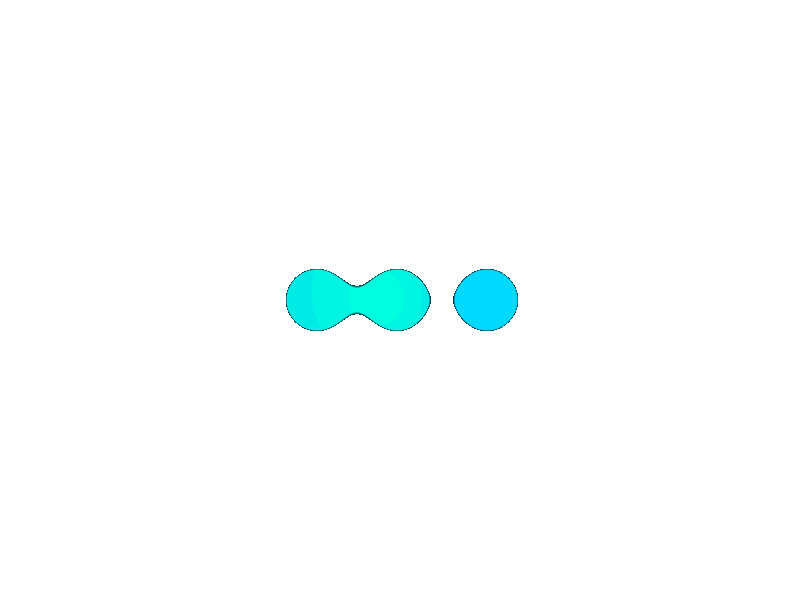

@if (tasks && !isLoading && !empty) {
@for (task of tasks; track $index) {

{{task.title}}
{{task.status}}
{{task.desc}}
{{task.updatedAt | date:'dd/MM/yyyy'}}
}
}
@if(isLoading){

Loading
}
@if(empty ||tasks?.length==0){
No Tasks To View
}
@if(isError){
An Error Has Occured Do Check Your Enternet Connection And Retry Again
}